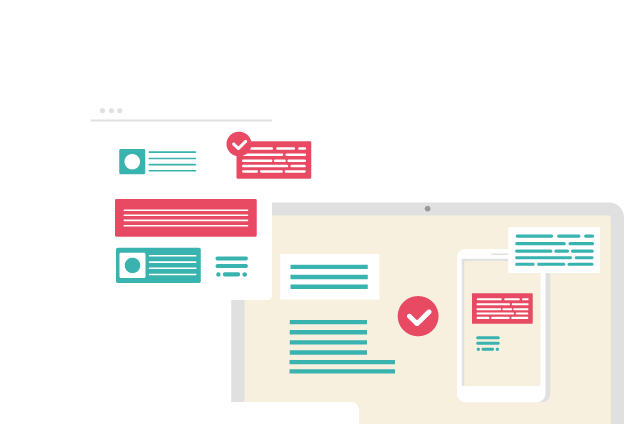

PLATFORM ♡
Web Application Firewall
AI 해킹 시대의 웹 공격은 요청·응답 본문과 계정 행위까지 연결해 봐야 합니다.
Web Application Firewall
AI 해킹 시대의 웹 공격은 요청·응답 본문과 계정 행위까지 연결해 봐야 합니다.

OWASP Top 10:2025 기준 웹 애플리케이션 위험 탐지·차단
SQL 인젝션·XSS·경로 조작·명령 실행·웹셸 업로드 등 우회 공격 대응
자격 증명 대입(Credential Stuffing)·브루트 포스 등 계정 탈취 공격 차단
요청·응답 본문 분석으로 개인정보·민감정보 유출 시도 조기 포착
PLURA-SIEM·EDR·Forensic 연동으로 Unknown/Zero-Day 공격 흐름 추적
AI SecOps 자동화와 원격 보안 관제 연계로 대응 지연 최소화
| 비교 항목 | 기존 WAF 중심 대응 | PLURA-WAF | AI-XDR 연계 효과 |
|---|---|---|---|
| 탐지 기준 | 시그니처·룰 중심 탐지 제한적 | 요청·응답 본문, 헤더, URL, 계정 행위 분석 우수 | SIEM·EDR 이벤트와 연결해 공격 체인 분석 매우 우수 |
| 우회 인젝션 대응 | 알려진 패턴 중심 제한적 | SQLi·XSS·경로 조작·명령 실행 페이로드 정밀 분석 우수 | 공격 후 서버 이벤트·파일 생성·프로세스 실행까지 추적 매우 우수 |
| 크리덴셜 스터핑 | 단순 횟수 제한 중심 제한적 | 로그인 속도, 계정 분산, IP 평판, URL 패턴 분석 우수 | 계정·단말·서버 로그와 연결해 탈취 이후 행위 추적 매우 우수 |
| 데이터 유출 탐지 | 요청 차단 중심, 응답 분석 제한 취약 | 응답 본문 기반 개인정보·DB 오류·디렉터리 노출 분석 우수 | 유출 징후를 포렌식 증거와 연결해 재발 방지 정책화 매우 우수 |
| 제로데이 징후 대응 | 알려진 취약점·룰에 의존 취약 | 비정상 요청·응답·행위 패턴을 AI로 분석 우수 | WAF 탐지 이후 EDR·Forensic 상관 분석으로 공격 흐름 검증 매우 우수 |
| 운영 방식 | 장비별 정책·로그 별도 관리 복잡 | 클라우드 기반 정책·로그·보고서 통합 관리 우수 | 탐지·차단·상관 분석·보고·관제까지 하나의 흐름으로 운영 매우 우수 |
| 비교 항목 | 기존 웹 보안 체계 | PLURA-WAF 기반 AI-XDR 체계 |
|---|---|---|
| 보안 관점 | 개별 웹 요청의 공격 패턴 판단 제한적 | 웹 요청·응답·계정·서버 이벤트를 연결한 맥락 기반 판단 매우 우수 |
| 로그 가시성 | URL·상태코드·일부 파라미터 중심 부족 | 헤더·본문·응답·로그인·IP·URL·서버 이벤트 통합 가시성 매우 우수 |
| AI 해킹 대응 | 자동화된 우회·변형 공격 식별에 한계 취약 | AI 기반 맥락 분석으로 변형 페이로드·비정상 행위·공격 체인 식별 매우 우수 |
| 차단 이후 분석 | 차단 이벤트 중심 확인 제한적 | 차단 전후 로그, 서버 이벤트, 포렌식 아티팩트까지 연결 분석 매우 우수 |
| 가상패치 운영 | 수동 룰 작성과 검증에 의존 복잡 | 탐지 근거, 차단 검증, SLA 지표를 기반으로 정책 개선 우수 |
| 관제·보고 | 장비별 경보·보고서 분리 부족 | 탐지 현황, 차단 근거, 공격자 IP, 영향 범위를 통합 보고 매우 우수 |
PLURA-WAF의 AI 해킹·제로데이 대응 방식
요청·응답 본문 기반 웹 공격 증거 확보
OWASP Top 10:2025 기준 주요 웹 위험 대응
크리덴셜 스터핑과 계정 탈취 공격 차단
MITRE ATT&CK 기반 웹 공격 맥락 분석
SIEM·EDR·Forensic 연동 상관 분석
AI 기반 탐지·검증과 제로데이 가상패치
기존 웹방화벽은 주로 알려진 패턴과 개별 요청 차단에 초점이 맞춰져 있었습니다.
PLURA-WAF는 웹 요청·응답 로그와 계정 행위, 서버 이벤트, 포렌식 증거를 결합해
AI 해킹 시대의 웹 공격 흐름을 탐지·차단·검증합니다.
단순 웹방화벽을 넘어 PLURA-AI·XDR의 웹 보안 센서이자 실시간 차단 엔진으로 동작합니다.